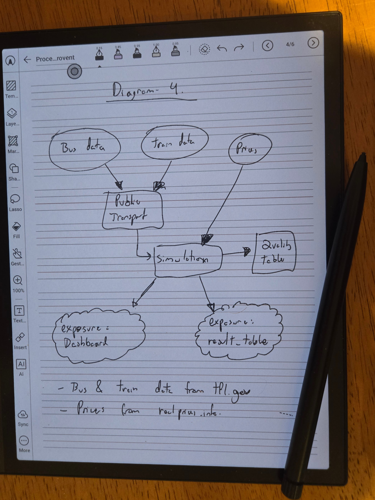

flowchart TD
start("I want to share a game to teach")
describe{"Can I describe the game? Intent"}
tell_ai("Tell the AI to create game")
explain("Explain it to the AI and play up scenarios that you had")
iterate["Iterate asking for changes"]
client_only{"Only client side?"}
firebase[/Firebase/]
publish("Publish to easy app")
start --> describe
describe -- yes --> tell_ai
describe -- no --> explain
explain --> describe
tell_ai --> iterate
iterate --> iterate
iterate --> client_only
client_only -- yes --> publish
client_only -- no --> firebase
firebase --> publish
I like sketching on an Onyx Boox. Diagrams, flowcharts and rough system designs can go here as freehand ink.

What I do not like is what happens next.
Transcribing or re-drawing in a diagramming tool is wasteful and, as I often say, if something is annoying and you do it often, there’s probably a better way.
Text is something agents and humans can both read, and is easy to store in source control. So I built an Agent Skill to do the conversion.
Note
I show you this, not so you necessarily use this, but so you get a sense of how easy it is to apply this same methodology to your own pain points. Michael Kennedy from Talk Python to me called it hyper-personal software.
The Skill
sketch-to-text takes a handwritten PDF or image and converts it into a Quarto .qmd file with Mermaid diagrams. The output renders, links, and lives with the rest of my writing.
Here’s one of my sketches converted (original PDF):
That came from telling Claude: “convert diagram-1.pdf to quarto”.
How I built it
Rubber duck first
I didn’t start by building anything, I started by complaining about what was annoying to an LLM and thinking through what a good solution would look like.1
I went through the Boox sync options: BOOXDrop, WebDAV, Obsidian, the various export formats (vector PDF, bitmap PDF, .note) that appear in the UI. Most had friction or lock-in I didn’t want. Then, as a test, I drew a quick diagram and asked the LLM to convert it to Mermaid.
It worked well enough to make the skill idea feel viable. I decided Quarto as a destination and any agent CLI as a runner were both fine, and that my only real work would be building good enough ground truth to test against.2
Talk, then build
Once I knew what I wanted, I described it to my agent and let it write the skill. The skill’s flow is: read → classify → extract structure → generate Mermaid → self-check → write. I didn’t have to think about it that much. I was already drawing a few more diagrams to build the ground truth.
Polish with evals
After I had 6 diagrams, drawn in a rush with handwriting that could be a challenge even for me, I converted all 6 into expected baseline .qmd files and manually compared what rendered with what I’d intended to draw.
This exposed issues fast and forced me to decide details that are hard to foresee. Cloud shapes, for example, aren’t implemented in Quarto’s bundled Mermaid renderer. When I hit that in diagram 4, I had to decide: @{ shape: cloud } (newer Mermaid, unsupported) or ((("text"))) (double circle, universally supported, semantically close enough)? The ground truth file is where that decision got made and recorded. That decision did not live in my head after that. It lived in the ground truth.
flowchart TD
bus(("Bus data"))
tram(("Tram data"))
prices(("Prices"))
pt["Public Transport"]
sim["Simulation"]
qt["Quality Table"]
dash((("exposure: Dashboard")))
result((("exposure: result_table")))
bus --> pt
tram --> pt
prices --> sim
pt --> sim
sim --> qt
sim --> dash
sim --> result
For each issue I found, I iterated with the agent and it updated the skill. The loop is simple: try on real input, see what breaks, make the decision explicit, validate.
Note
When building ground truth you’re allowed to change the data, the expected output, and/or the skill logic. Whatever works to get a baseline that’s honest and easy to iterate against.
With ground truth in place, I ran promptfoo3 evals: each diagram PDF went through the skill, the output was checked against the reference with icontains assertions and llm-rubric grading via a local deepseek-r1:14b. The exact tool stack is not the important part.
First run: 5/6. Diagram 5 failed. The skill dropped the edge labels on the three branches.
flowchart TD
banner["Design, De-Risk & Jumpstart"]
intent["Intent"]
goals["`Reduce effort
Increase ROI
Fail fast`"]
guardrails["Guardrails"]
banner -- Design --> intent
banner -- De-Risk --> goals
banner -- Jumpstart --> guardrails
The fix was one line in SKILL.md: preserve every label written on or beside an arrow; a labelled arrow must use -- label --> not bare -->. Re-run: 6/6.
A failing eval tells you exactly what the skill missed. One quick instruction to the agent, a re-run, and you know it holds.
Why the evals matter more than the skill
The skill is useful on day one. The evals are what make it safe to change on day ten.
Without evals, this would still be a neat personal trick.
sketch-to-text handles flowcharts well for what I tested and is harmless enough to use whenever. If I notice inaccuracies, I can figure out whether the problem is in the source file, the skill logic, or the model. Fix it, add the new case to the evals, and catch future regressions. If I want to expand it, I’ll know I haven’t broken anything for my existing cases.
The investment is a bit of ground truth up front, in exchange for confidence on every future change.
Note
The eval inputs and ground truth files are co-located with the skill for now while the right distribution format for Agent Skill evals is still being worked out. See the evals README.
Check it out
Footnotes
Rubber duck debugging is the practice of explaining a problem out loud (originally to a rubber duck) to clarify your own thinking before asking for help. Popularised by Hunt and Thomas in The Pragmatic Programmer.↩︎
Ground truth is a manually verified reference output used to measure whether a system is working correctly. In evals, it’s the answer you’d accept if a human did the task well.↩︎
Promptfoo is one of several open-source eval frameworks. See ai-evals.io/tools/compare for a comparison of the main options.↩︎